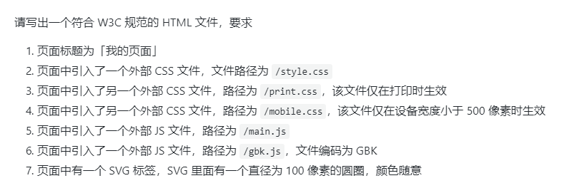

1、

答、
<!DOCTYPE html>
<html lang ="zh-Hans">
<head>
<meta charset ="UTF-8">
<title>我的页面</title>
<link rel ="stylesheet" type="text/css" href ="./style.css">
<link rel ="stylesheet" type="text/css" href ="./print.css" media="print">
<link rel ="stylesheet" type="text/css" href ="./mobile.css" media ="(max-width:500px)">
<script src="./main.js"></script>
<script type="text/javascript" language="javascript src="./gkb.js""></script>
</head>
<body>
<svg>
<circle cx="100" cy="100" r="100" stroke="black" stroke-width="1" fill="pink"
</svg>
</body>
</html>
2、

答：
##meta viewpor
声明一个meta viewport的标签，让它的宽度等于设备的宽度，并且不允许手动用户缩放。
```
<meta name="viewport content="width=device-width,user-scalable=no, initital-scale=1.0, maximum-scale=1.0, minimum-scale=1.0">
```
##媒体查询
对你的使用的媒体工具进行某些条件的查询，如果条件符合那么就使用媒体查询语法内的样式。
如下代码，当你使用的媒体的宽度小于600像素，那么就让所有的字体变成红色。
```
<style>
@media (max-width=600px){
*{
color: red;
}
}
</style>
```
##动态rem方案
动态rem方案将根元素的font-size等于页面的宽度，因为rem等于页面根元素的，这样使用rem单位就可以实现等比缩放页面不会产生别的瑕疵了
代码如下 1rem = font-size = 1pagewidth
```
<script>
var PageWidth = window.innerWidth
document.write('<style> html{ font-size' + PageWidth + ' } </style>')
</script>
```
3、

答：
使用box-shadow。代码如下：box-shadow的五个属性分别是： x轴 ，y轴，blur-radius，spread-radius，color；
其中blur-radius代表模糊程度，spread-radius代表阴影的大小。
```
<!DOCTYPE html>
<html lang="en">
<head>
<meta charset="UTF-8">
<title>带阴影的圆角矩形</title>
<style>
div{
width: 100px;
height: 100px;
border: 10px solid black;
border-radius: 10px;
box-shadow: 10px 10px 5px #888888;
}
</style>
</head>
<body>
<div></div>
</body>
</html>
```
4、

答：


#闭包
```
var a = 1
function(){
console.log(a)
}
```
##概括：上述代码就是一个标准的闭包。函数+这个函数作用域外的变量===闭包。闭包常常用来「间接访问一个变量」。换句话说，「隐藏一个变量」。
##用途：可以封装一个私有的变量，当这个变量被一直引用的时候，它就不会被回收。这个是闭包的有点同时也是缺点，因为，无用的闭包多了会无意义的占用内存。
5、
答：
##call
语法如下
```
function.call(thisArg,arg1,arg2,...)
```
##apply
语法如下
```
function.apply(thisArg,[argsArray])
```
apply()方法的作用和call()的方法类似，只有一个区别，就是call()方法可以接受若干个参数列表，而apply()方法是接受一个包含多个参数的数组。
##bind
语法如下
function.bind(thisArg[,arg1[,arg2[,...]]])
8、

9、
目前知道的：
DNS查询——浏览器与服务器建立连接——发送HTTP请求(一共四部分)——后台处理请求——发送HTTP响应——浏览器与服务器断开连接——解析HTML——下载CSS——解析CSS——下载JS——解析JS——下载图片——解析图片——渲染DOM树——渲染样式树——执行JS
##DNS查询
通过DNS查询到对应的IP地址，这一步相当于你的路由问电信公司，然后电信公司返回一个IP地址给你。如果你修改hosts文件，那么就可以自己制定IP地址，绕过DNS查询这一栏(可以用来FQ)。
##浏览器与服务器建立连接（建立TCP三次握手）
大意如下：
1.浏览器：服务器我要连接你了，可以吗？
2.服务器：可以，连接吧。
3.浏览器：好的，那我连接了。
连接成功
##请求与响应
1.浏览器向服务器发送请求GET/POST(第一部分)
2.浏览器发送请求头（第二部分），如果是POST请求那么还会发送上传的内容（第四部分）
3.服务器发送响应的响应头信息（200 OK 之类的）
4.服务器发送以Content-type格式的数据
5.在接受数据的同时开始解析显示HTML，解析显示过程中发现`link`标签便继续请求然后解析显示css渲染然后执行JS到完成整个网页。
##浏览器与服务器断开连接（断开四次握手）
1.主机向服务发送断开请求（不早了，我该走了）
2.服务器确认接受后响应（知道了）
3.服务器像主机发送断开通知（我也要走了）
4.主机在接受到信号了返回响应（嗯，好的），主机收到响应后立即断开。
10、
答：
##ES5
```
var array = [1,5,2,3,4,2,3,1,3,4]
function unique(array){
var n = [];
for(var i = 0; i < array.length; i++){
if (n.indexOf(array[i]) === -1){
n.push(array[i])
}
}
return n
}
unique(array)
```
##ES6
```
var array = [1,5,2,3,4,2,3,1,3,4]
function unique (array) {
return Array.from(new Set(array))
}
unique(array)
```